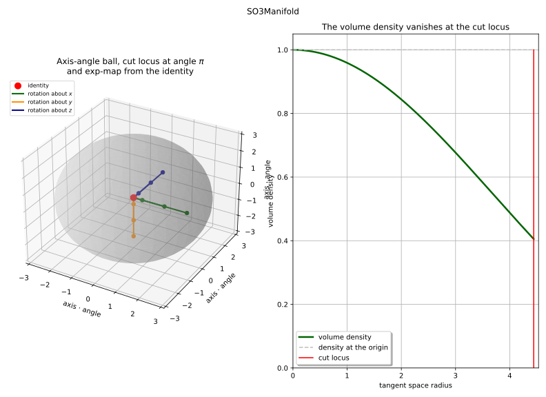

SO3Manifold¶
(Source code, svg)


- class SO3Manifold(*args)¶
Rotation group manifold.
Warning
This class is experimental and likely to be modified in future releases. To use it, import the
openturns.experimentalsubmodule.The special orthogonal group
![SO(3)]() of 3D rotations, embedded in
of 3D rotations, embedded in
![\Rset^{3 \times 3}]() as flattened row-major 3x3 matrices (ambient
dimension 9, intrinsic dimension 3). This layout matches the points of
the
as flattened row-major 3x3 matrices (ambient
dimension 9, intrinsic dimension 3). This layout matches the points of
the MatrixFisherdistribution.The Riemannian metric is the bi-invariant metric induced by the ambient Frobenius product on
: the tangent basis is
Frobenius-orthonormal, the geodesic distance between two rotations is
![\sqrt{2}]() times the angle of the relative rotation and the total
volume is
times the angle of the relative rotation and the total
volume is ![16 \sqrt{2} \pi^2]() .
The exponential and logarithmic maps are available in closed form
through the Rodrigues formulas (Rodrigues, O. (1840). Des lois geometriques
qui regissent les deplacements d’un systeme solide dans l’espace, et de la
variation des coordonnees provenant de ces deplacements consideres
independamment des causes qui peuvent les produire. Journal de
Mathematiques Pures et Appliquees, 5, 380-440: rotation of a vector about an
axis by an angle expressed with the skew-symmetric matrix exponential. Murray,
R. M., Li, Z., Sastry, S. S. (1994). A Mathematical Introduction to Robotic
Manipulation. CRC Press, Chapter 2: exponential and logarithmic maps on SO(3)
and their axis-angle parametrization used here.
.
The exponential and logarithmic maps are available in closed form
through the Rodrigues formulas (Rodrigues, O. (1840). Des lois geometriques
qui regissent les deplacements d’un systeme solide dans l’espace, et de la
variation des coordonnees provenant de ces deplacements consideres
independamment des causes qui peuvent les produire. Journal de
Mathematiques Pures et Appliquees, 5, 380-440: rotation of a vector about an
axis by an angle expressed with the skew-symmetric matrix exponential. Murray,
R. M., Li, Z., Sastry, S. S. (1994). A Mathematical Introduction to Robotic
Manipulation. CRC Press, Chapter 2: exponential and logarithmic maps on SO(3)
and their axis-angle parametrization used here.Methods
expMap(basePoint, tangentVector)Exponential map at a base point.
Accessor to the ambient dimension.
Accessor to the object's name.
Accessor to the tolerance.
getExpMapVolumeDensity(coordinates)Volume density of the pushed-forward Lebesgue measure.
getGeodesicDistance(point1, point2)Geodesic distance between two manifold points.
Accessor to the intrinsic dimension.
getName()Accessor to the object's name.
getTangentBasis(basePoint)Orthonormal basis of the tangent space at a base point.
Total Riemannian volume of the manifold.
hasName()Test if the object is named.
isOnManifold(point)Check manifold membership up to the tolerance.
logMap(basePoint, point)Logarithmic map at a base point.
projectToManifold(point)Closest-point projection onto the manifold.
projectToTangentSpace(basePoint, vector)Orthogonal projection onto the tangent space at a base point.
setEpsilon(epsilon)Accessor to the tolerance.
setName(name)Accessor to the object's name.
See also
Notes
The following
ResourceMapkey is used:Manifold-Epsilon(Scalar, default:1e-10): tolerance used byisOnManifold()and the projections.
Examples
>>> import openturns as ot >>> import openturns.experimental as otexp >>> manifold = otexp.SO3Manifold() >>> print(manifold.getIntrinsicDimension()) 3 >>> print(manifold.getVolume()) 223.3236543...
- __init__(*args)¶
- expMap(basePoint, tangentVector)¶
Exponential map at a base point.
- Parameters:
- basePointsequence of float
Base point on the manifold.
- tangentVectorsequence of float
Tangent vector at the base point.
- Returns:
- point
Point Image of the tangent vector on the manifold.
- point
- getAmbientDimension()¶
Accessor to the ambient dimension.
- Returns:
- ambientDimensionint
Dimension of the ambient Euclidean space.
- getClassName()¶
Accessor to the object’s name.
- Returns:
- class_namestr
The object class name (object.__class__.__name__).
- getEpsilon()¶
Accessor to the tolerance.
- Returns:
- epsilonfloat
Tolerance used by
isOnManifold()and the projections.
- getExpMapVolumeDensity(coordinates)¶
Volume density of the pushed-forward Lebesgue measure.
The exponential map pushes the Lebesgue measure of the intrinsic coordinate space onto the manifold; this density is its Radon-Nikodym derivative with respect to the Riemannian volume, evaluated at the given intrinsic coordinates in the
getTangentBasis()basis.- Parameters:
- coordinatessequence of float
Intrinsic coordinates in the tangent basis.
- Returns:
- densityfloat,
![> 0]()
Volume density at the given coordinates.
- densityfloat,
- getGeodesicDistance(point1, point2)¶
Geodesic distance between two manifold points.
- Parameters:
- point1sequence of float
First point of the manifold.
- point2sequence of float
Second point of the manifold.
- Returns:
- distancefloat
Geodesic distance between the two points.
- getIntrinsicDimension()¶
Accessor to the intrinsic dimension.
- Returns:
- intrinsicDimensionint
Dimension of the manifold as a Riemannian manifold.
- getName()¶
Accessor to the object’s name.
- Returns:
- namestr
The name of the object.
- getTangentBasis(basePoint)¶
Orthonormal basis of the tangent space at a base point.
- Parameters:
- basePointsequence of float
Base point on the manifold.
- Returns:
- basis
Sample Orthonormal ambient vectors spanning the tangent space.
- basis
- getVolume()¶
Total Riemannian volume of the manifold.
- Returns:
- volumefloat
Total volume of the manifold for its Riemannian metric.
- hasName()¶
Test if the object is named.
- Returns:
- hasNamebool
True if the name is not empty.
- isOnManifold(point)¶
Check manifold membership up to the tolerance.
- Parameters:
- pointsequence of float
Ambient vector.
- Returns:
- isOnManifoldbool
Whether the ambient vector lies on the manifold.
- logMap(basePoint, point)¶
Logarithmic map at a base point.
- Parameters:
- basePointsequence of float
Base point on the manifold.
- pointsequence of float
Point of the manifold.
- Returns:
- tangentVector
Point Preimage of the point in the tangent space at the base point.
- tangentVector
- projectToManifold(point)¶
Closest-point projection onto the manifold.
- Parameters:
- pointsequence of float
Ambient vector.
- Returns:
- projectedPoint
Point Projection of the ambient vector onto the manifold.
- projectedPoint
- projectToTangentSpace(basePoint, vector)¶
Orthogonal projection onto the tangent space at a base point.
- Parameters:
- basePointsequence of float
Base point on the manifold.
- vectorsequence of float
Ambient vector.
- Returns:
- tangentVector
Point Projection of the ambient vector onto the tangent space.
- tangentVector
- setEpsilon(epsilon)¶
Accessor to the tolerance.
- Parameters:
- epsilonfloat,
Tolerance used by
isOnManifold()and the projections.
- epsilonfloat,
- setName(name)¶
Accessor to the object’s name.
- Parameters:
- namestr
The name of the object.